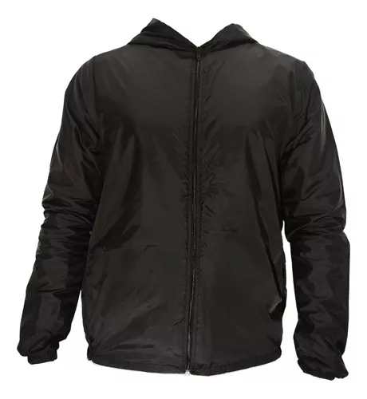

Material: Nylon resistente y ligero con propiedades antifluido.
Color: Negro elegante que combina con todo.
Cierre: Cremallera completa en la parte frontal para una protección total
Tallas disponibles: Desde S hasta XXL, para todos los gustos y tamaños.
Perfecta para actividades al aire libre, caminatas o simplemente para el uso diario en la ciudad.
Con la Chaqueta Rompevientos Nylon Antifluido, estarás preparado para enfrentar el clima sin sacrificar tu estilo.
Chaqueta Rompevientos Nylon Antifluido $101.000
Agregar al carrito